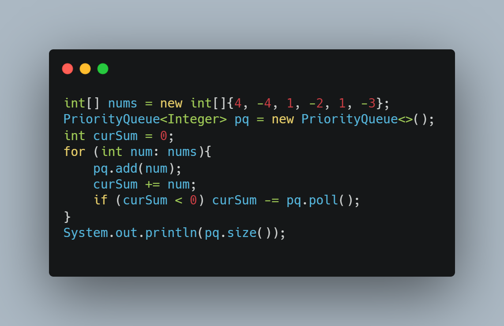
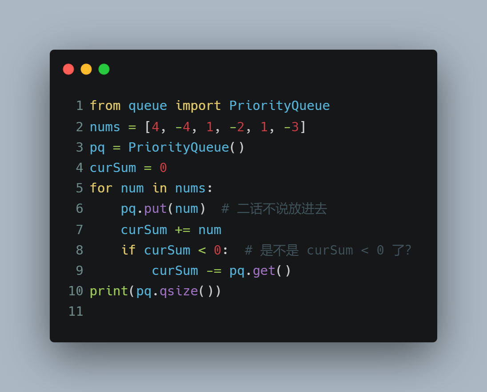
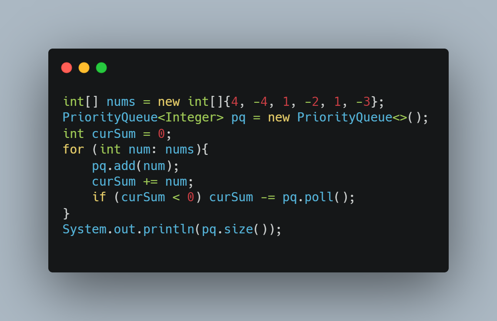
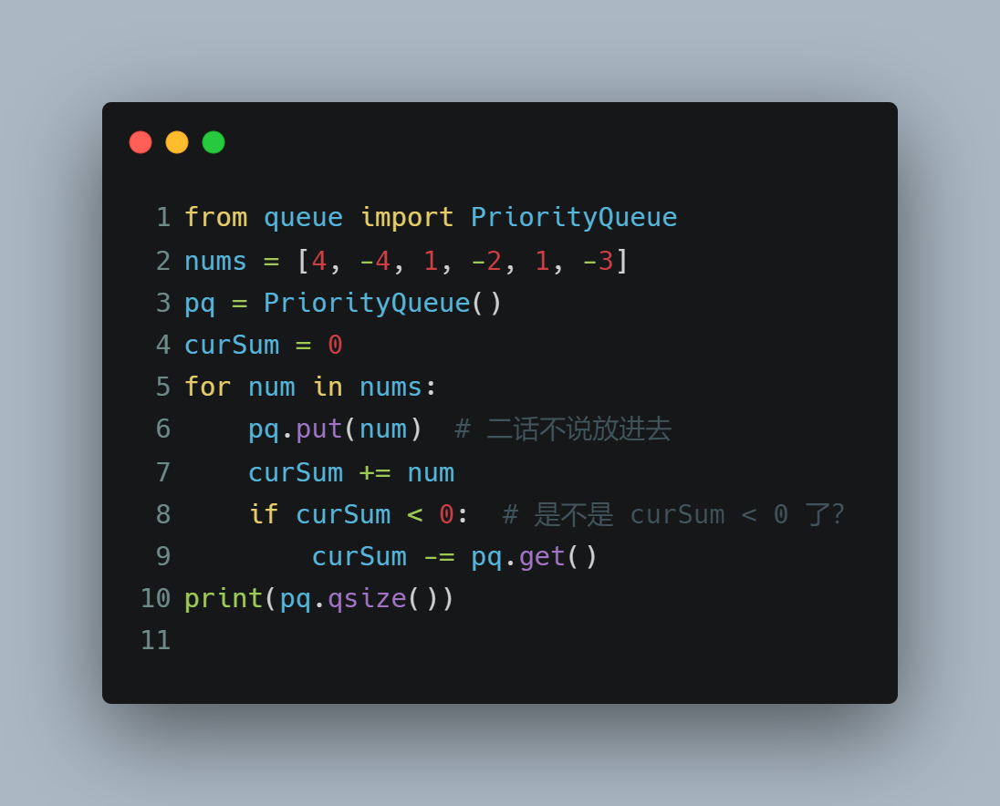

字节第四批笔试贪心题
2021-09-12字节后端岗位笔试第四题
给出一组数
累计选中和不能小于0 ，求最多选择的个数
类似于 https://leetcode-cn.com/problems/p0NxJO/


2021-09-12字节后端岗位笔试第四题
给出一组数
累计选中和不能小于0 ，求最多选择的个数
类似于 https://leetcode-cn.com/problems/p0NxJO/


你有 4 张写有 1 到 9 数字的牌。你需要判断是否能通过 *，/，+，-，(，) 的运算得到 24。
示例 1:
输入: [4, 1, 8, 7]
输出: True
解释: (8-4) * (7-1) = 24
示例 2:
输入: [1, 2, 1, 2]
输出: False
注意:
除法运算符 / 表示实数除法，而不是整数除法。例如 4 / (1 - 2/3) = 12 。
每个运算符对两个数进行运算。特别是我们不能用 - 作为一元运算符。例如，[1, 1, 1, 1] 作为输入时，表达式 -1 - 1 - 1 - 1 是不允许的。
你不能将数字连接在一起。例如，输入为 [1, 2, 1, 2] 时，不能写成 12 + 12 。
链接：https://leetcode-cn.com/problems/24-game
递归暴力搜寻。。。
judgePoint24(cards)函数意义为 cards 数组 是否满足 24 点。
存在递归关系 ， 从cards中随便挑选两个进行任何运算，把运算出来的结果放回cards，调用递归算下去即可。
1 | class Solution: |
输出表达式
1 | from typing import List |
首先看一道高频经典力扣题146. LRU 缓存机制，题干不再赘述。直接放出我的题解
1 |
|
嗯。hashmap + 双向链表 搞定！
既然LRU类都整出来了，自己可以自己实现 python functools里的 @lru_cache呀。
1 | from functools import wraps |
如何使用呢？
1 |
|
2021.8.31 某同学的字节一面手撕算法题
给出类似于 HM2(H2ON3A)3N2 这样的类化学表达式
输出每个原子的个数
看起来有点意思
思路：
遇到左括号亚栈 有括号弹出栈
栈中存放固定大小为元素总数的数组，其记录每个元素的出现次数
同时主要到字母后面与右括号的数字，讲栈顶记录的出现次数与其相乘即可。
1 | # 写上 所有 化学元素和 原子序数的对应 。这里比较懒先写几个用得到的 |
输出
1 | 原子H : 2 |
Welcome to Hexo! This is your very first post. Check documentation for more info. If you get any problems when using Hexo, you can find the answer in troubleshooting or you can ask me on GitHub.
1 | $ hexo new "My New Post" |
More info: Writing
1 | $ hexo server |
More info: Server
1 | $ hexo generate |
More info: Generating
1 | $ hexo deploy |
More info: Deployment
参加美团笔试的其中一个笔试题，题干是以角色扮演类游戏为背景，计算角色对标靶的总攻击和。
没有记录下详细的题干，只有自己的代码。
1 | class Warrior: |
有一个正整数数组 arr，现给你一个对应的查询数组 queries，其中 queries[i] = [Li, Ri]。
对于每个查询 i，请你计算从 Li 到 Ri 的 XOR 值（即 arr[Li] xor arr[Li+1] xor … xor arr[Ri]）作为本次查询的结果。
并返回一个包含给定查询 queries 所有结果的数组。
示例 1：
输入：arr = [1,3,4,8], queries = [[0,1],[1,2],[0,3],[3,3]]
输出：[2,7,14,8]
解释：
数组中元素的二进制表示形式是：
1 = 0001
3 = 0011
4 = 0100
8 = 1000
查询的 XOR 值为：
[0,1] = 1 xor 3 = 2
[1,2] = 3 xor 4 = 7
[0,3] = 1 xor 3 xor 4 xor 8 = 14
[3,3] = 8
示例 2：
输入：arr = [4,8,2,10], queries = [[2,3],[1,3],[0,0],[0,3]]
输出：[8,0,4,4]
提示：
1 <= arr.length <= 3 * 10^4
1 <= arr[i] <= 10^9
1 <= queries.length <= 3 * 10^4
queries[i].length == 2
0 <= queries[i][0] <= queries[i][1] < arr.length
来源：力扣（LeetCode）
链接：https://leetcode-cn.com/problems/xor-queries-of-a-subarray
前缀和的思想。使用暴力法会超时
1 | class Solution: |
评论区神解答
1 | class Solution: |
给定一棵二叉树，想象自己站在它的右侧，按照从顶部到底部的顺序，返回从右侧所能看到的节点值。
示例:
1 |
|
来源：力扣（LeetCode）
链接：https://leetcode-cn.com/problems/binary-tree-right-side-view
参考甜姐的解答
二、DFS
我们按照 「根结点 -> 右子树 -> 左子树」 的顺序访问， 就可以保证每层都是最先访问最右边的节点的。
（与先序遍历 「根结点 -> 左子树 -> 右子树」 正好相反，先序遍历每层最先访问的是最左边的节点）
1 | class Solution { |

一只青蛙想要过河。 假定河流被等分为若干个单元格，并且在每一个单元格内都有可能放有一块石子（也有可能没有）。 青蛙可以跳上石子，但是不可以跳入水中。
给你石子的位置列表 stones（用单元格序号 升序 表示）， 请判定青蛙能否成功过河（即能否在最后一步跳至最后一块石子上）。
开始时， 青蛙默认已站在第一块石子上，并可以假定它第一步只能跳跃一个单位（即只能从单元格 1 跳至单元格 2 ）。
如果青蛙上一步跳跃了 k 个单位，那么它接下来的跳跃距离只能选择为 k - 1、k 或 k + 1 个单位。 另请注意，青蛙只能向前方（终点的方向）跳跃。
示例 1：
输入：stones = [0,1,3,5,6,8,12,17]
输出：true
解释：青蛙可以成功过河，按照如下方案跳跃：跳 1 个单位到第 2 块石子, 然后跳 2 个单位到第 3 块石子, 接着 跳 2 个单位到第 4 块石子, 然后跳 3 个单位到第 6 块石子, 跳 4 个单位到第 7 块石子, 最后，跳 5 个单位到第 8 个石子（即最后一块石子）。
示例 2：
输入：stones = [0,1,2,3,4,8,9,11]
输出：false
解释：这是因为第 5 和第 6 个石子之间的间距太大，没有可选的方案供青蛙跳跃过去。
提示：
2 <= stones.length <= 2000
0 <= stones[i] <= 231 - 1
stones[0] == 0
来源：力扣（LeetCode）
链接：https://leetcode-cn.com/problems/frog-jump
用户 bryannliu 的解答：
这题和 55. 跳跃游戏 有点像，但是55 满足贪心选择性，所以直接用贪心算法做，这道题目因为有多种走法，所以得一个个试，用记忆化递归来做比较合适。
因为每次有三种走法，要尝试每种可能，肯定有重复计算，所以加上备忘录。
- 状态定义和参数：s(i, step) 表示当前是第i块时候，通过step步过来的，
- 决策和状态转移：接下来就是根据走的步数做状态变换，这里状态变换只有三种 step-1, step, step + 1, 尝试每种可能的走法，看能不能走到最后一块。
我这里的 recur(start, k) 中的 start 表示 stones数组顺序下标
1 | class Solution: |
给你一个整数数组 nums ，找到其中最长严格递增子序列的长度。
子序列是由数组派生而来的序列，删除（或不删除）数组中的元素而不改变其余元素的顺序。例如，[3,6,2,7] 是数组 [0,3,1,6,2,2,7] 的子序列。
示例 1：
输入：nums = [10,9,2,5,3,7,101,18]
输出：4
解释：最长递增子序列是 [2,3,7,101]，因此长度为 4 。
示例 2：
输入：nums = [0,1,0,3,2,3]
输出：4
示例 3：
输入：nums = [7,7,7,7,7,7,7]
输出：1
提示：
1 <= nums.length <= 2500
-104 <= nums[i] <= 104
进阶：
你可以设计时间复杂度为 O(n2) 的解决方案吗？
你能将算法的时间复杂度降低到 O(n log(n)) 吗?
来源：力扣（LeetCode）
链接：https://leetcode-cn.com/problems/longest-increasing-subsequence
引用 甜姨的评论
相当于维护一个结果数组，如果当前元素比结果数组的值都大的的话，就追加在结果数组后面（相当于递增序列长度加了1）；否则的话用当前元素覆盖掉第一个比它大的元素（这样做的话后续递增序列才有可能更长，即使并没有更长，这个覆盖操作也并没有副作用哈，当然这个覆盖操作可能会让最终的结果数组值并不是最终的递增序列值，这无所谓）
1 | class Solution { |
这里给出我的使用二分法API的Python版
1 | class Solution: |